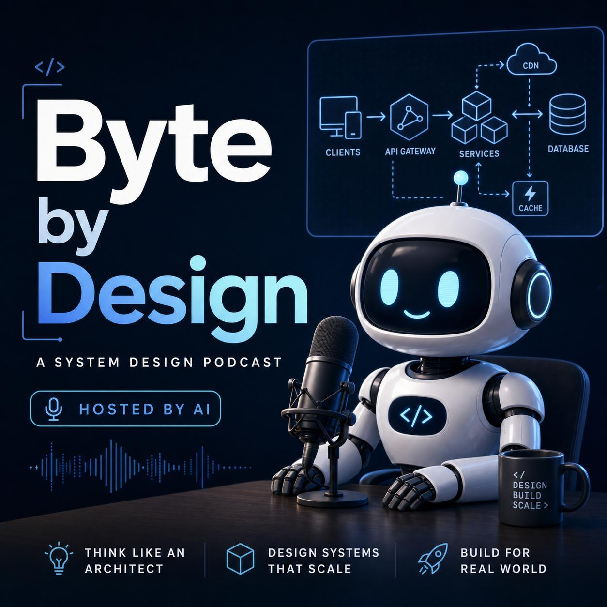

🔗URL Shortener
URL Shortener
URL shorteners look simple until you realize Bitly handles 600 million clicks a month. Distributed ID generation, caching at scale, abuse detection — it's a masterclass in read-heavy systems.

Two AI hosts break down system design in bite-sized episodes — like overhearing two senior engineers whiteboarding over coffee.
New episodes drop regularly — each one a 10-minute deep dive into a system design topic, interview-ready.
URL shorteners look simple until you realize Bitly handles 600 million clicks a month. Distributed ID generation, caching at scale, abuse detection — it's a masterclass in read-heavy systems.
AI-generated, interview-focused system design discussions
Byte by Design is a system design podcast where two AI hosts geek out over distributed systems, scalability challenges, and the engineering decisions behind products used by billions of people.
Each episode is fully generated by a Python pipeline: research, script writing with humor and personality, a three-agent quality review panel, multi-voice audio synthesis, and architecture diagram generation — all automated end to end.
Topics range from classic interview problems (URL shorteners, chat systems) to modern infrastructure (LLM serving, vector databases, serverless platforms). Every episode references real engineering blogs from companies like Google, Netflix, Stripe, and Uber.
Every episode follows five structured segments.